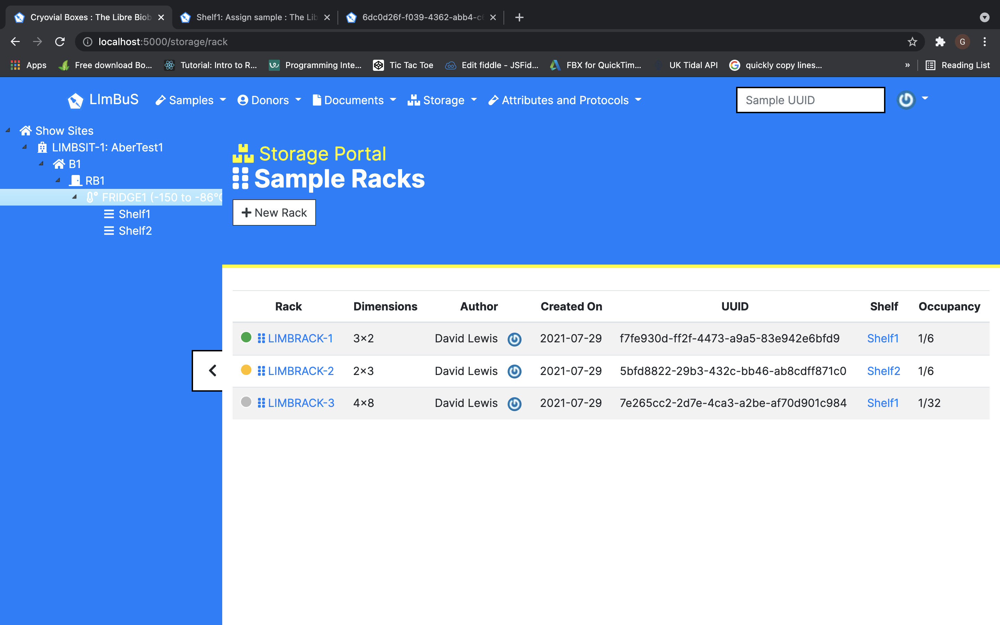

David Gethin Lewis
Web Developer | Game Developer
During July-August 2021 I had the opportunity to work on LImBuS Biobank Information Management System. I worked on various parts of the website while working there. The main structure of the website is built off of a Python framework called Flask. Before working on the system, I had never used Flask before. While reading through the code I picked up an understanding on the code. I worked using a variety of languages while there. These included Python, JavaScript, HTML and some SQL.
For the first few weeks I was mostly working on improving the interface. This included changing what information was displayed on the site. This required changing code in a JavaScript file and some HTML. I then moved on something slightly more complicated which was changing how a table was displayed. This required me to have some knowledge of a variety of languages e.g. Python, JavaScript, HTML and SQL. This was difficult as the system is fairly large and complex and it required work on both the front-end and the back-end of the site. It also included connecting various parts of the site to each other through Python files. I needed to display the shelf that was associated to the rack and also include a link to the shelf itself.
For the final week it was discussed with a colleague that if a user were to sign-up to the site, that they should be sent a confirmation email when they signed-up to the site. This was challenging as it required a flask-extension to be installed which was Flask-Mail. This required installing the extension using a terminal. I wasn't too familar using a terminal to manage files therefore it was a bit challenging. I managed to get the extension to install with the assistance of a colleague which I was happy with. Once the extension was installed I continued working on implementing the extension for the remainder of the week while I was there. 